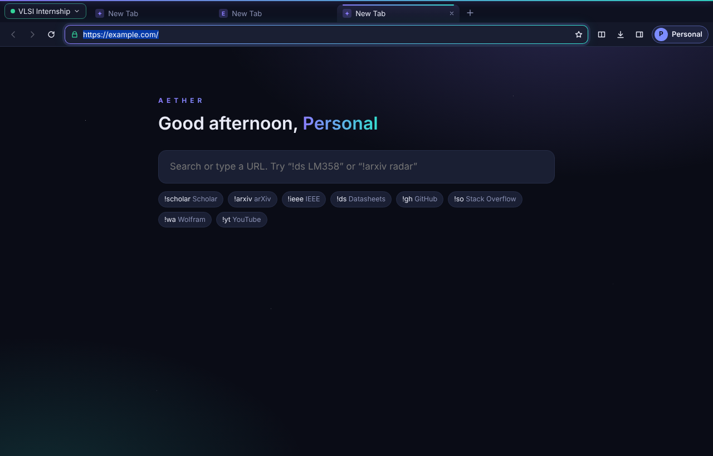
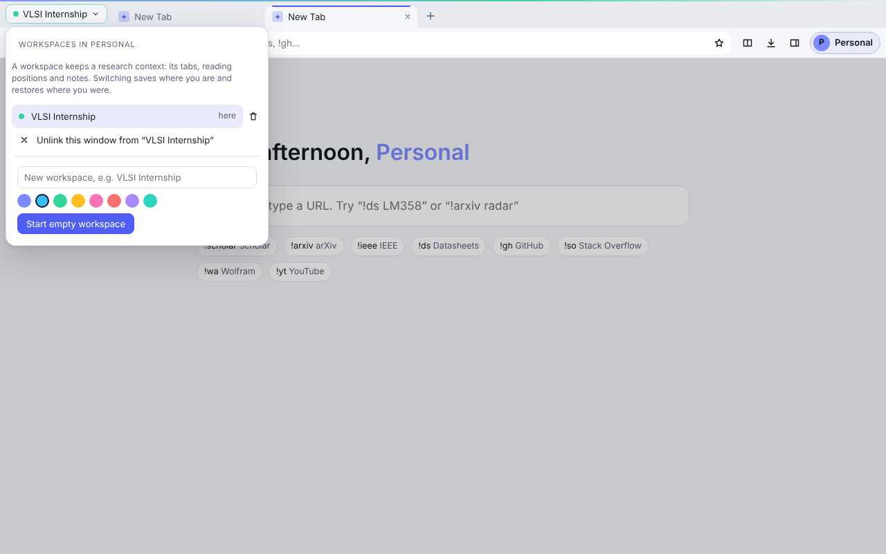

Layer 1
AETHER Core
Everything essential, offline and fast. This is what you install today.
AETHER is a private, local-first browser for engineers, students and researchers. Separate profiles that never share cookies, workspaces that remember where you were, strong ad blocking on by default, and engineering tools right in the address bar. No account, no cloud and no telemetry.

The core stays light enough for everyday browsing. Studio adds the professional tools that ship with AETHER. Modules are specialist toolkits you install when you need them, each with its own workspace, tools and project files, like unlocking a new area in a game. No module is just a list of links or an AI chat window.
Everything essential, offline and fast. This is what you install today.
Professional tools that ship with the app. Writing, editing and exporting work without AI or internet.
Installable toolkits for each discipline. Research & Writing ships in 0.4.0. Data Science & ML, powered by Epoch, comes next. The other modules follow in later releases.
Every item here is in the current installer. Screenshots are from the real app.

A browser handles your sign-ins and passwords, so we list our gaps as plainly as our protections. Both lists come from AETHER's threat model.
Ad blocking reduces tracking. It does not make you anonymous to websites, your network or your university. AETHER doesn't promise otherwise.
Pick a version to read its notes, or compare two versions to see everything that changed between them.
The public download link is being set up. Until then, the installer is available from the project's releases folder.
5575b44b501af06f2bbc5ce0f141a151e1780c1875421b414e6a600775db3abdGet-FileHash .\AETHER-Setup-0.4.0.exe and compare the result with the SHA-256 on this page.Already using AETHER? Your profiles, passwords and sessions live in %APPDATA%\AETHER and are kept when you install a newer version over the old one.